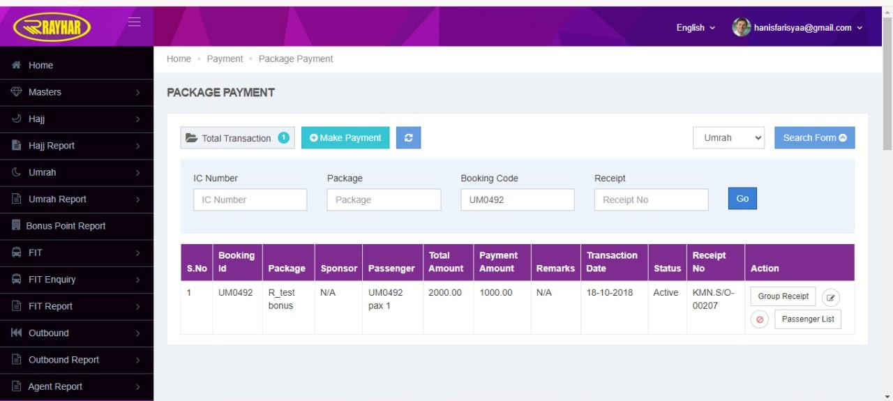
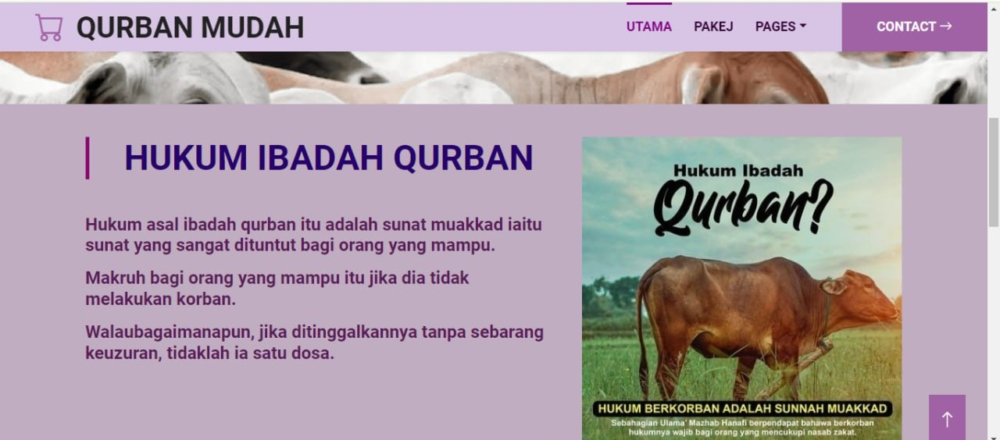
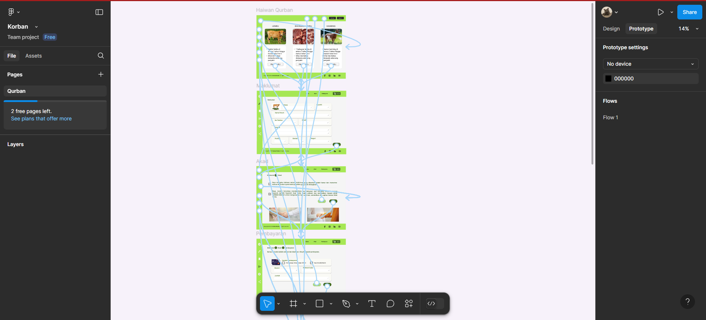
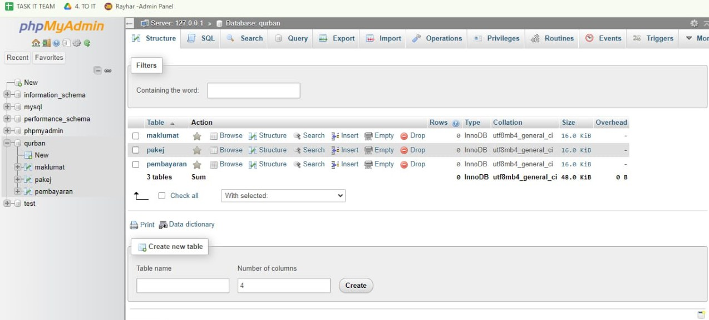

Internship at Rayhar Travels (July 2024 - September 2024)
During my internship at Rayhar Travels, I had the opportunity to work in the IT department, where I contributed to various projects and learned essential skills related to system management and data processing.
- Managed and maintained internal admin systems for data verification and processing.
- Collaborated with team members to ensure smooth operations and data accuracy.
- Created reports and analyzed system performance to suggest improvements.
- Do wireframing and prototype for website using Figma.
- Created 2 websites using Sublime text editor and Xampp.
Skills Gained: Problem-solving, teamwork, data management, system administration.




School Cooperator (January 2019 - February 2022)
During my high school years, I served as a School Cooperator since I was form 2 until form 5. I was responsible for managing and overseeing the operations of the school cooperative.
- Managed inventory, including restocking items and maintaining accurate records of supplies.
- Assisted customers, including students and teachers with their purchases and inquiries.
- Handled cash transactions responsibly, ensuring accuracy in daily sales reports.
- Contributed to maintaining a clean, organized, and welcoming environment for customers.
Skills Gained: Inventory management, cash handling, communication skills and customer service.